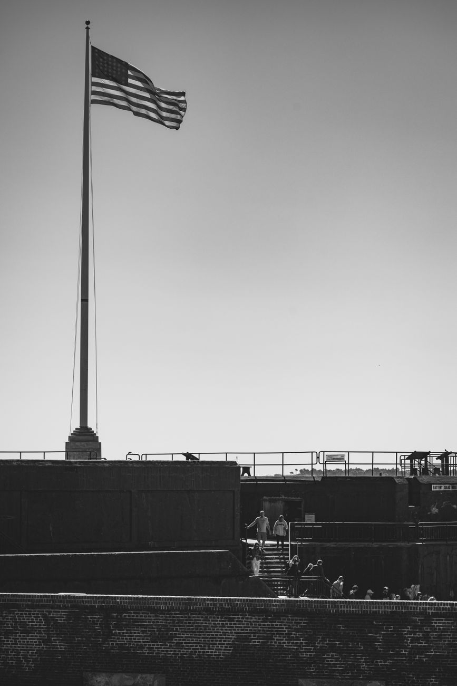

Season 1, Episode 8 — The First Shot (April 1861)

The Civil War began with a West Point graduate firing on his own former artillery instructor. It was not an accident. It was a symbol of everything that was about to happen.
Robert Anderson graduated from West Point 15th of 37 in the Class of 1825. He served as an artillery officer, then returned to the Academy as an artillery instructor — teaching the next generation of cadets how to handle cannon, how to lay siege, how to defend a fort. One of his students was a brilliant young Louisiana cadet named Pierre Gustave Toutant Beauregard.
Anderson was from Kentucky — a slave state that chose to stay in the Union. He was personally opposed to slavery but believed in preserving the Union above all else. In November 1860, as the secession crisis reached its peak, he was given command of the US forces in Charleston harbor. It was an impossible assignment: hold federal forts in a city that had already decided to leave the Union.
Beauregard graduated 2nd in the Class of 1838 — the first of his class to be promoted. He was a brilliant engineer who served on Winfield Scott's staff during the Mexican-American War. In January 1861, he was appointed Superintendent of West Point — and served for exactly 5 days before being removed for his Confederate sympathies.
When the war came, Beauregard returned to Charleston and took command of Confederate forces there. He was the man sitting in Charleston, staring across the harbor at the Union-held Fort Sumter — knowing the man inside it was his old teacher.
Beauregard had learned artillery from Anderson. Now he was aiming artillery at him. The irony was not lost on either man.
The standoff unfolded through the winter and spring of 1860–1861, each step tightening the noose.
December 1860 — South Carolina secedes. Anderson moves his garrison from the indefensible Fort Moultrie to the stronger Fort Sumter, built on an artificial island in the middle of Charleston harbor.
January–March 1861 — Standoff. The fort is surrounded, isolated, running low on supplies. Lincoln is inaugurated. He decides on a cautious approach: resupply the fort, but send only food — not reinforcements or weapons.
April 6 — Lincoln notifies the South Carolina governor that he is sending supplies to Fort Sumter.
April 10 — The Confederate government orders Beauregard to demand Sumter's surrender. If refused, take the fort by force.
April 11 — Beauregard sends aides to demand surrender. Anderson refuses — but adds that he will be forced to surrender in a few days anyway when supplies run out. The aides relay this to Beauregard.
April 12, 3:20 AM — The Confederate government decides Anderson's response is insufficient. Orders Beauregard to open fire.
April 12, 4:30 AM — The first shot is fired from Fort Johnson — a mortar shell that burst over Fort Sumter. The bombardment lasts 34 hours.
April 13 — Anderson surrenders.
When Beauregard was a cadet at West Point, Anderson was his artillery instructor — known as a kind and competent teacher. Now his student was shelling his fort. The war began with a family quarrel inside the Long Gray Line, and every major battle to come would continue this pattern: classmates, friends, former students and teachers killing each other.
Anderson's surrender terms were generous. Beauregard let him salute his flag before evacuating — a small gesture of respect between men who had once shared a classroom. After the surrender, Anderson returned to the North as a hero. He died in 1871, never fully recovering from the war's first battle.
The war started with a West Pointer firing on another West Pointer. It was a family fight from the very first shell. No one watching that first mortar shell arc over Charleston harbor could have missed the message: this war would be fought by men who had trained together, studied together, and learned the same profession together — now using that profession to destroy each other.
Key facts:
How this works: Work through each phase in order. Don't scroll ahead to the answers.
Cover the answers below. For each clue, respond in the form of "Who is…" or "What is…". Answers are at the bottom of this page.
Phase 1 (Fill-the-Blank):
Phase 2 (Core Jeopardy):
Phase 3 (Previously On…):
In Module 9, we arrive at Antietam — the bloodiest single day in American military history. McClellan vs. A.P. Hill. The love triangle payoff. The battle that gave Lincoln the political cover to issue the Emancipation Proclamation.
For Fort Sumter, see The Fate of Fort Sumter by W.A. Swanberg. For Beauregard, see T. Harry Williams's P.G.T. Beauregard: Napoleon in Gray.
Have questions? Want to dig deeper into the siege of Fort Sumter or the Anderson–Beauregard relationship? Just ask — I'm your teacher.